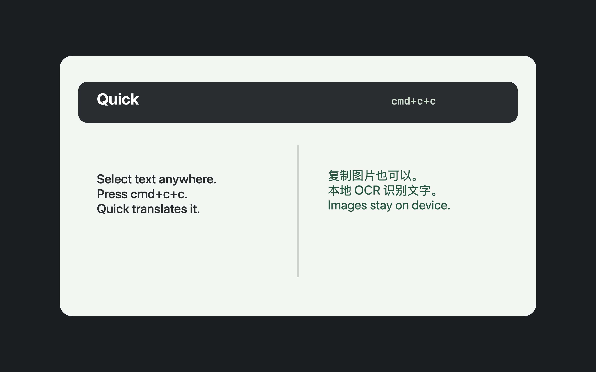

Translate selected text
Select text in any app, press cmd+c+c, and Quick shows a focused translation popup.
Quick is a native Swift menu bar app for instant translation and copied-image OCR. Text goes to your OpenAI-compatible provider. Images stay on device with PP-OCRv6 tiny and ONNX Runtime.

Select text in any app, press cmd+c+c, and Quick shows a focused translation popup.
Copy a screenshot or image, press the same shortcut, and Quick runs local OCR.
Configure API key, Base URL, model, and System Prompt for OpenAI-compatible APIs.
Quick watches pasteboard changes for the default shortcut, so cmd+c+c does not need macOS Input Monitoring permission.
cmd+c+c -> read pasteboard -> text -> translate -> image -> local OCR -> show popup
Swift, AppKit, SwiftUI, Keychain storage, and a small menu bar footprint.
Works with OpenAI and third-party providers that expose compatible /v1 endpoints.
Uses PP-OCRv6 tiny models through ONNX Runtime for copied screenshots and images.